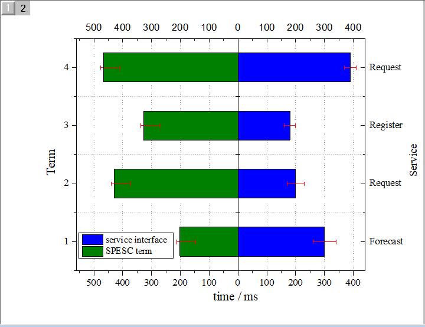
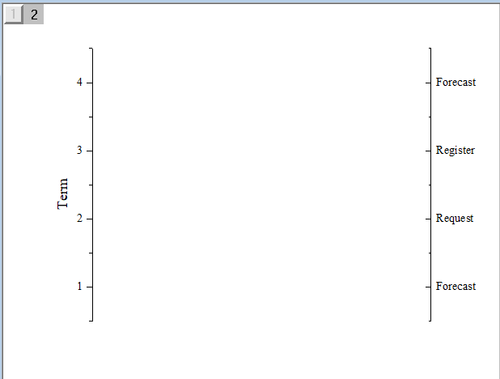
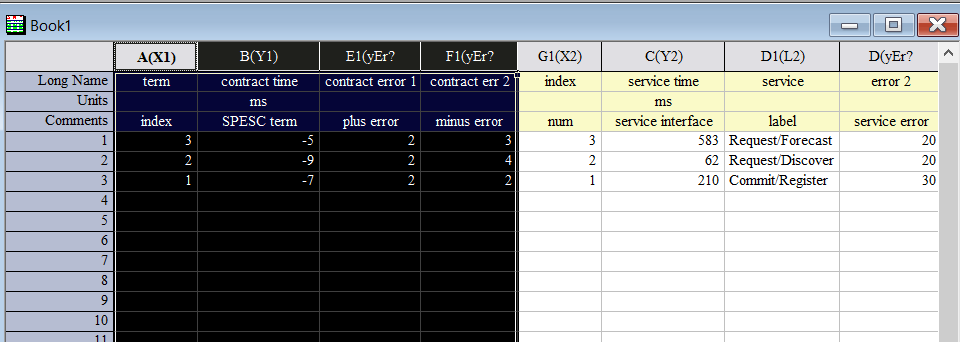
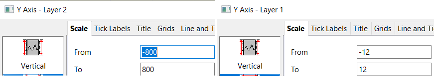
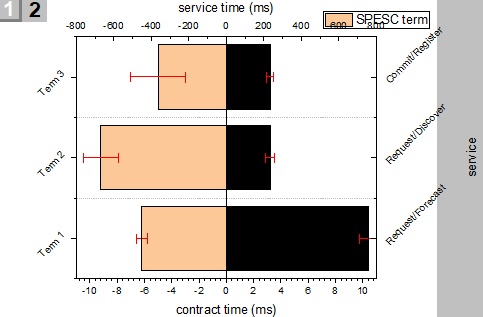
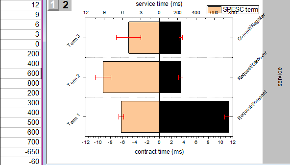
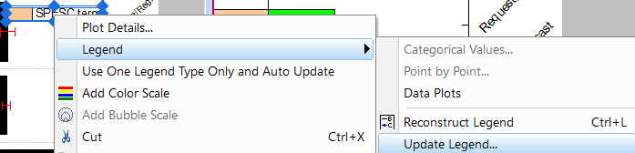
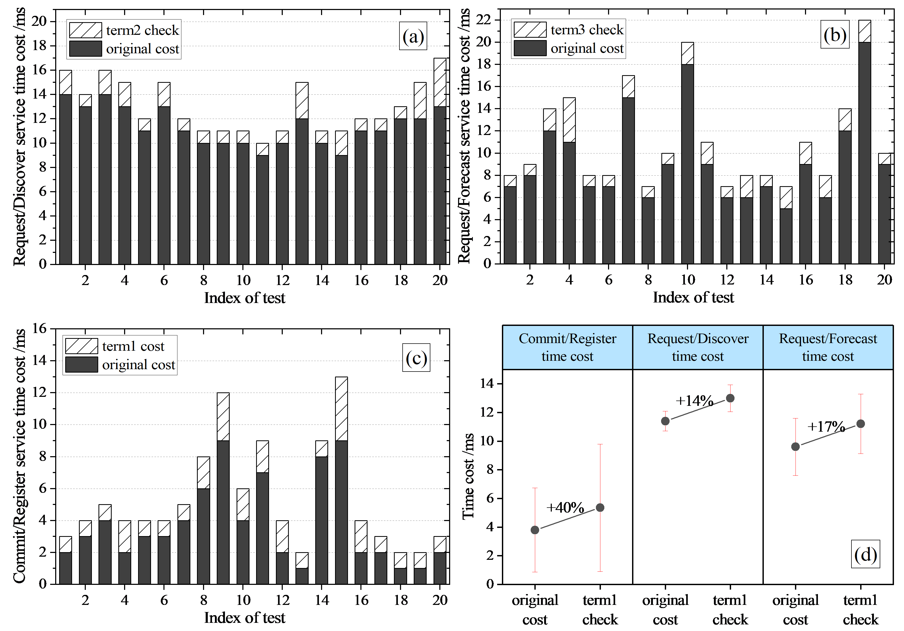
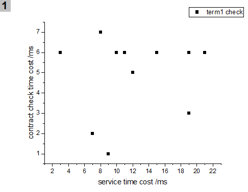
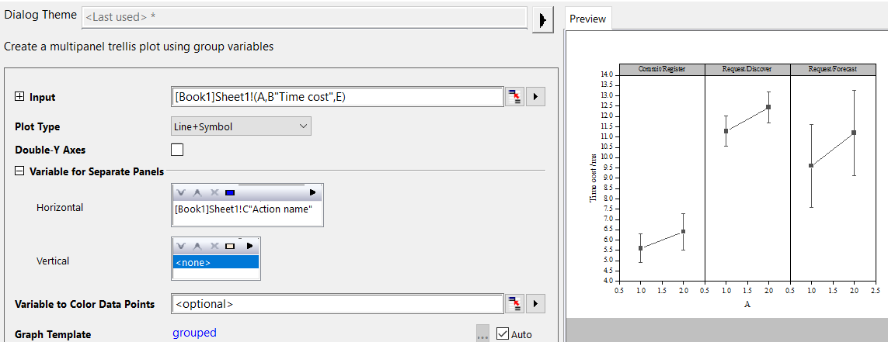

案例1：绘制一张带正负双轴和ErrorBar的Bar图

注意Bar数据的x轴是纵轴，y轴是横轴。
Step 1：填充数据
设置服务名称(service)、条款名称(term)、合约条款执行时间及正负误差（95%置信区间）、服务接口执行时间及正负误差（95%置信区间）
Step 2：选中数据生成Bar，然后设置ErrorBar和Overlap
按理来说，两套数据最好使用两个图层，但是OriginPro对于第二图层的bar显示有问题，所以将数据都放到一个图层。
Step 3：设置四个方向的边框
这里由于左Y形成了中间框，所以需要新建一个图层来画出左Y.
新建图层：右键 > New Layer(Axis) > Left-Y，然后隐藏图层1
双击坐标轴可以设置左右两个Y如下图所示

然后隐藏图层2，打开图层1删掉左右Y
设置图层之间的坐标轴关联（同x轴或同y轴）：右键 > New Layer(Axis) > Right Y 或者 Left Y
建立之后可以右键图层数字>Layer Properties 查看
Top X 的生成可以通过双击坐标轴，进入 “Title & Format” 部分找到

这里有个小技巧是数据设置正负值来区分方向。现在，我们需要将负值显示为正值：
以及添加Top X的数值显示
添加对齐虚线
目前的Layer1：
Step 4: 合并图层，细调
双击errorBar，调节颜色为红色
将column宽度调细一些
调整一下坐标轴说明，效果图：
调节一下字体
裁边，右键>Fit Page To Layers ,设置border width为2或3
案例2：在案例1基础上，正负轴的scale不一样

这次我们需要将两套数据画在两个图层上了，并且在用上2021新版的OriginPro后，原来Column全部从底部涂色的bug也消失了～
Step 1: 选中左边的数据（合约条款计时）

Plot > 绘制bar图
Step 2: 添加新图层: New Layer(Axes) > Open Dialog
自定义坐标轴，Left和Buttom不勾选
隐藏图层1。之后选中右边数据，点击当前图片窗口，然后点击Insert > Plot to Layer > 绘制column即可
因为Origin中column和bar的区别只是在于X-Y坐标轴的位置互换。将column变成bar只需要点击菜单 > Graph，选中 Exchange X-Y Axes
Step 3: 统一坐标轴

只要将坐标轴的正负绝对值设置相等，就可以保持x轴（垂直）的重合：
Step 4: 设置ErrorBar
双击Error Bar，设置一正一负（对于正态分布，正负误差相等），并替换颜色为红色，增加bar两头的宽度（Cap值）
对于Layer的ErrorBar也是同理操作：
Step 5: : Label值设定
Layer1 x轴(垂直)标签值加前缀Term，旋转45度，之后可去掉标题”term”。
Layer2 x轴(垂直)的标签数据来源设置为service列
亦设置格式旋转45度：

接下来设置y轴的tick labels。双击y轴（Top 水平轴）数据点，从自定义dataset（新建的Sheet2）中获取
调整dataset中的值，使之与原来的刻度水平匹配：

接着，隐藏layer1的bottom line和tick labels，将layer2 top的数据复制到bottom显示出来。复制粘贴坐标轴标题匹配对应部分：
Step 6: Update legends
右键图例更新，

选择 Reconstruct 和 One Legend for Whole Page

Step 7: 美化
修改宽度
修改颜色
设置Layer1和2的x轴（垂直轴）的minor ticks和minor grids为none；设置y轴（水平轴）的major grids和minor grids
右键图例>Properties, 设置frame的border为none
Preferences > Text Fonts修改默认字体为Times New Roman，Axis>Unit Display for Axis Title 修改单位显示为 /<U>
调节字体为Times New Roman，大小为18/20
裁边:右键>Fit Layers to Page…
案例3：栅图+组图

我们先绘制比较简单的散点图部分
Step 1: 选中前两列的数据，绘制散点图
点击菜单栏 Plot > Scatter

修改坐标轴，添加grids，字体统一 Times New Roman 24号
Step 2: 复制
Graph窗口右键>Duplicate
然后右键copy Graph > Properties，去掉Long Name
接着右键图层1 > Plot setup，选择新的X和Y轴数据，点击Replace
同理绘制出第3张散点图
3张图都出来后，统一一下大小格式
Step 3: 选中左边数据，点击 Trellis
Trellis图是Origin2017后提供的新功能，我们用它来制作Before-After图
在弹出窗口设置中加入C列Action Name，作为Panel的分类依据：

Step 4: 修正坐标轴
Step 5: 为线段添加文本
设置颜色在panel内部递增：
Step 6: 合并

我们给每张图标上序号，然后点击某一个Graph，记住要排列的图片序号，然后进入Merge Graph Windows Dialog…

不用的图片去掉， Margin调整为1